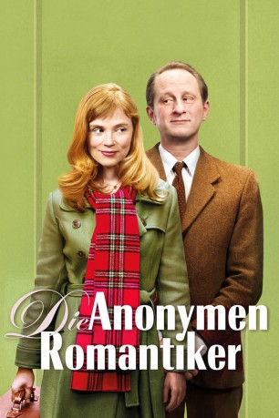
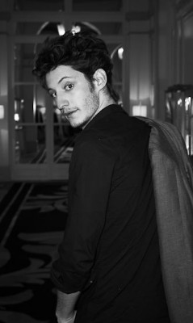
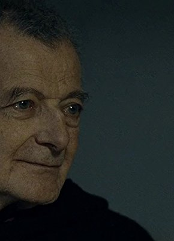

#2087 Die Anonymen Romantiker
 
 IMDB-Wertung: 6.9 / 10
IMDB-Wertung: 6.9 / 10  Metascore: 69
Metascore: 69 
Jean-René und Angélique teilen nicht nur ihr Faible für Schokolade: Beide leiden furchtbar unter ihrer Schüchternheit. So sehr, dass sie deswegen in Therapie sind. Als ausgerechnet diese beiden Schokoladengourmets miteinander ausgehen, beginnen sie langsam ihre Ängste zu überwinden. Die Betonung liegt auf langsam.
Jahr: 2010
Dauer: 80 Minuten
FSK:
Land: Frankreich Studio: Delphi Filmverleih ProduktionTonspuren:
Untertitel:
Auflösung: 1080p (1920x816) Größe: 4577 MB
Genre: Komödie, Liebe
Regisseur: Jean-Pierre Améris
Drehbuch: Jean-Pierre Améris, Philippe Blasband
Soundtrack: Pierre Adenot
Darsteller:
 Benoît Poelvoorde als Jean-René Van Den Hugde
Benoît Poelvoorde als Jean-René Van Den Hugde Isabelle Carré als Angélique Delange
Isabelle Carré als Angélique Delange-  Pierre Niney als Ludo
 Alice Pol als Adèle, une émotive anonyme
Alice Pol als Adèle, une émotive anonyme- Nancy Tate als
- Lorella Cravotta als Magda
- Lise Lamétrie als Suzanne
- Swann Arlaud als Antoine
- Stéphan Wojtowicz als Le psychologue
 Jacques Boudet als Rémi, un émotif anonyme
Jacques Boudet als Rémi, un émotif anonyme- Céline Duhamel als Mimi, une émotive anonyme
- Philippe Fretun als Maxime, un émotif anonyme
- Grégoire Ludig als Julien, un émotif anonyme
- Philippe Gaulé als Philippe, un émotif anonyme
- Joëlle Séchaud als Joëlle, une émotive anonyme
- Isabelle Gruault als Sylviane, une émotive anonyme
- Claude Aufaure als M. Mercier
-  Philippe Laudenbach als Le président du jury du salon du chocolat
- Marie-Christine Demarest als Madame Legrand
- Pascal Ternisien als Le serveur restaurant
- Jean-Yves Chatelais als Le réceptionniste
- Christiane Millet als La mère d'Angélique
- Vincent Paillier als Franck, l'amant de la mère
- Eric Naggar als Le gérant méprisant
- Vijay Singh als Le vendeur de roses
- Noémie Landreau als La vendeuse 'À la Mère de Famille'
- Pierre Adenot als Le pianiste bar
- Christophe Tourrette als Membre du jury Salon du chocolat
- Claude Humbert als Membre du jury Salon du chocolat
- Anny Vogel als Vendeuse Mercier
- Florence Mallet-Laffay als Vendeuse Mercier
- Alexandra Morales als Hôtesse salon
- Cindy Mollaret als Hôtesse salon
- Robert Barnouin als Membre du jury Salon du chocolat
- Christophe Tarare als Membre du jury Salon du chocolat
- Rémi Patoux als Membre du jury Salon du chocolat
- Sabrina Baldassara als
- Jean-Pascal Abribat als
- Pierre Bénézit als
- Mustapha Abourachid als
- Dominique Verrier als
- Philippe Briegh als Violoniste orchestre restaurant
- Philippe Garcia als Contrebassiste orchestre restaurant
- Jacques Bretaudeau als Accordéoniste orchestre restaurant
- Gilles Haddad Areski als Guitariste orchestre restaurant
- Constantin 'Kosty' Lacatus als Joueur de Cymbalum orchestre restaurant
- Franco Vega San Francisco als Groupe mariachi Salon du chocolat
- Lester Vega San Francisco als Groupe mariachi Salon du chocolat
- Juan Vega Correa als Groupe mariachi Salon du chocolat
Datei: X:\2010(A-F)\Anonymen Romantiker, Die (2010, FSK, 1920x816).mkv seit 01.10.2015
Festplatte: HD 2009(G-Z)-2010(A-F)
 Es gibt insgesamt 95 Filme in der Gruppe '2010(A-F)'
Es gibt insgesamt 95 Filme in der Gruppe '2010(A-F)'